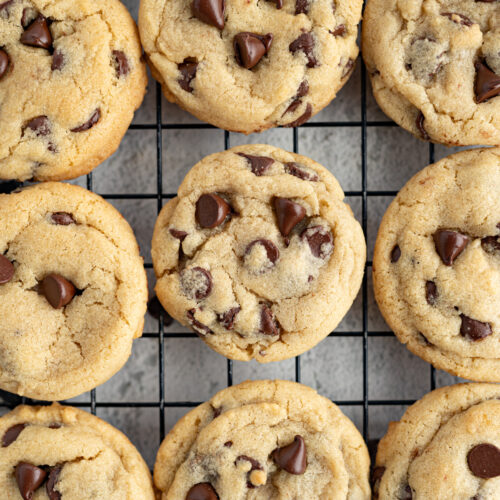
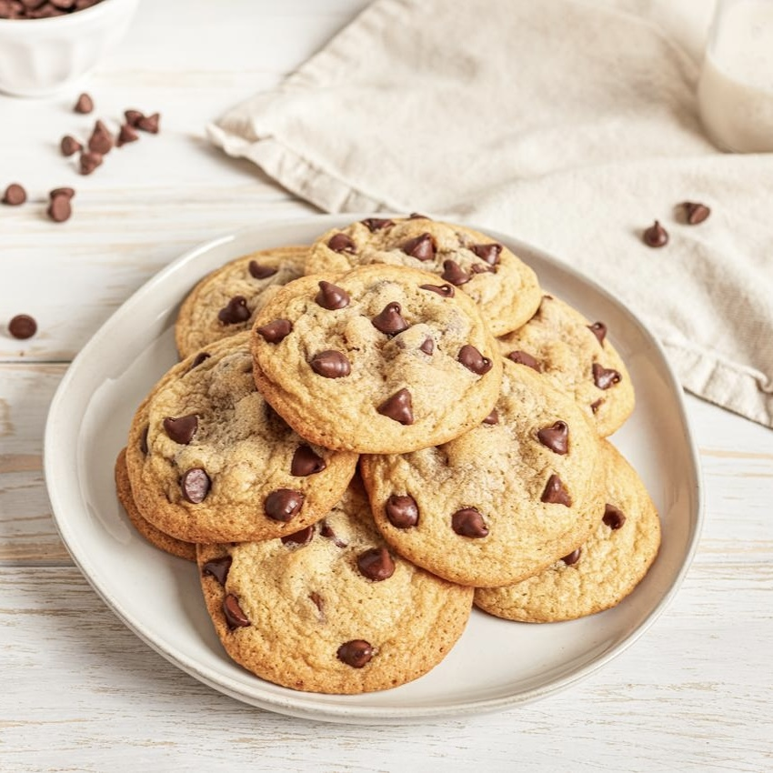
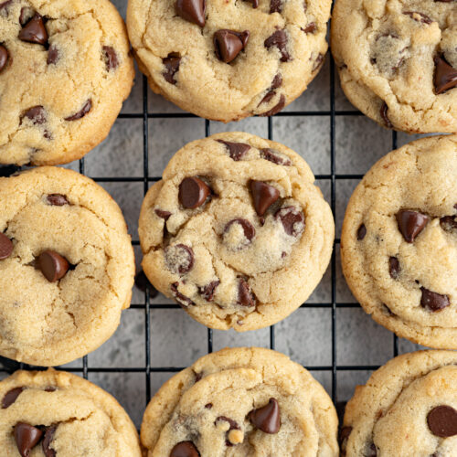
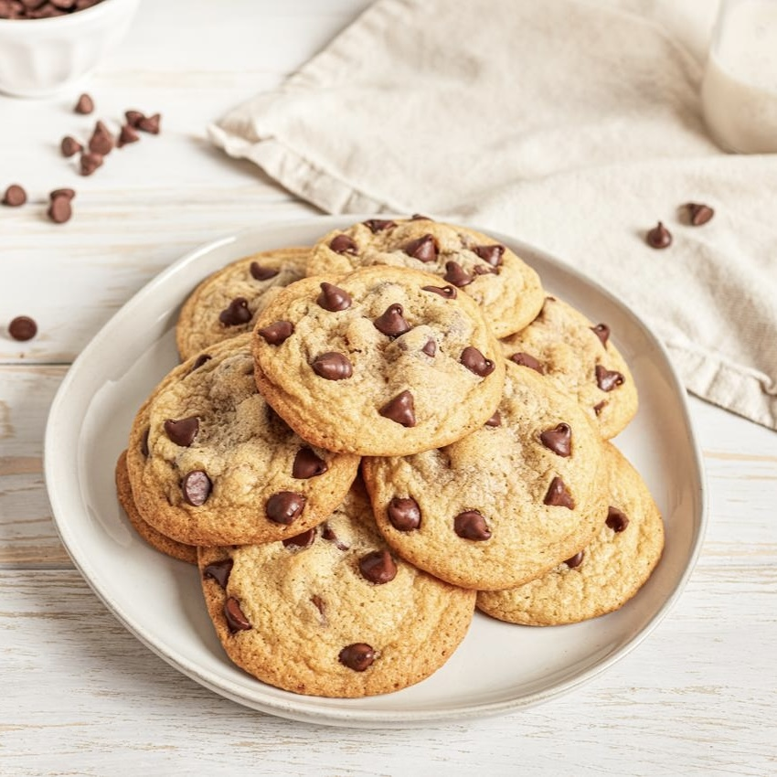
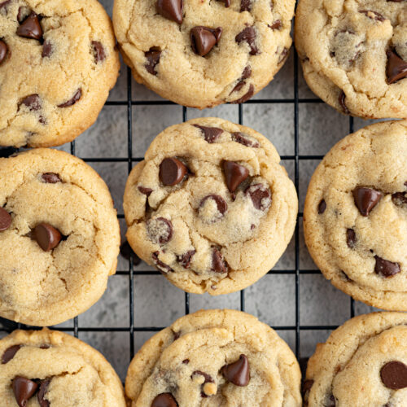
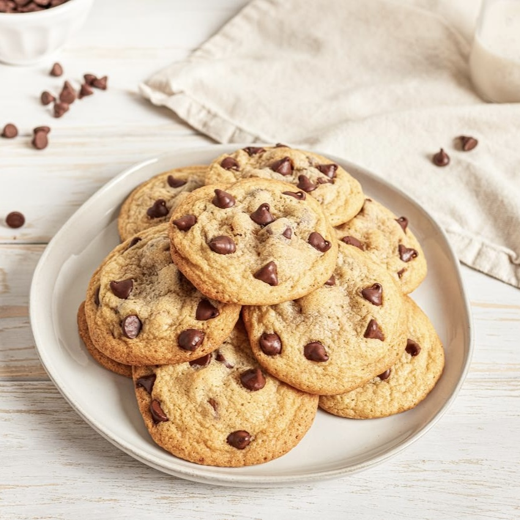
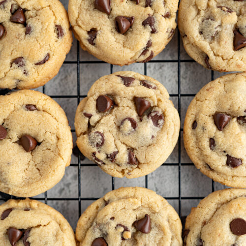
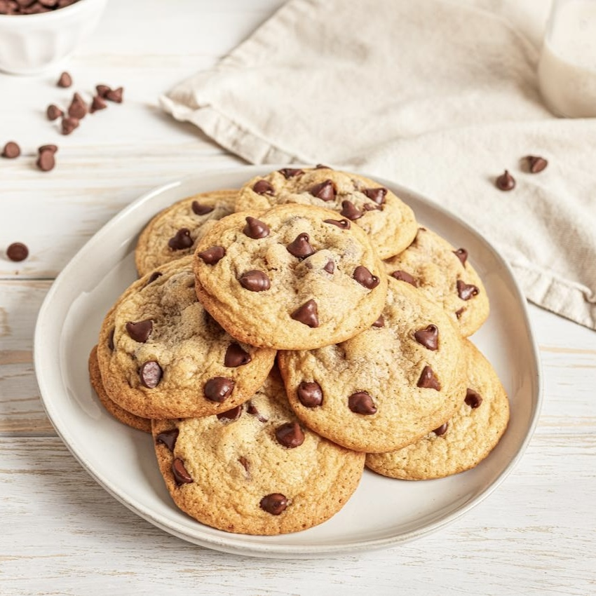

There's something about my mom's chocolate chip cookies that makes them unforgettable. With just a handful of simple ingredients such as butter, sugar, and plenty of chocolate chips, she creates the kind of cookies that bring me straight back to my childhood. The dough comes together effortlessly, with the right balance of sweetness and just enough vanilla to make the whole house smell like home. What makes them truly special, though, is the way she bakes them with so much care, pulling them from the oven just as they're golden on the edges but still soft and chewy in the middle. I can remember sitting in the kitchen, the warmth of the cookies filling the air, and knowing I'd have a plate of them ready to share with my family. They're the perfect comfort food that's simple, sweet, and brimming with memories that make each bite feel like a piece of home.
Source